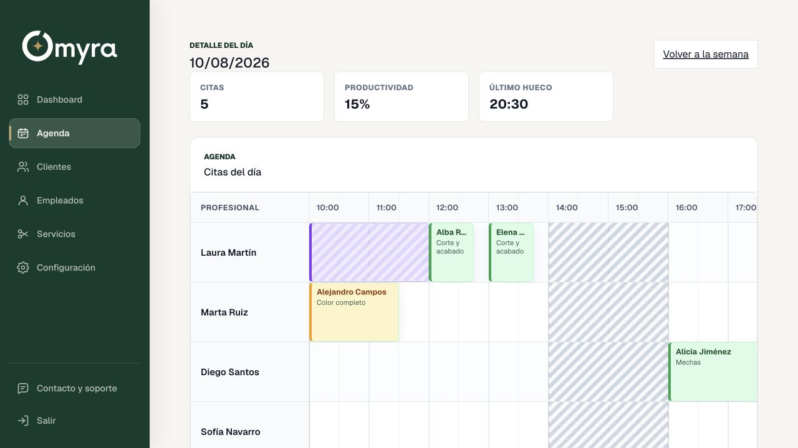
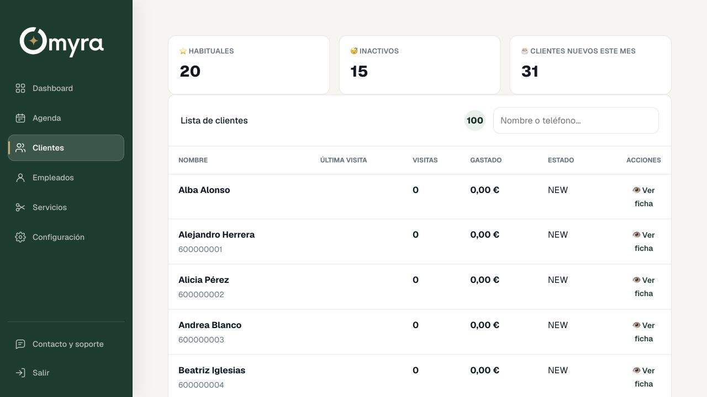
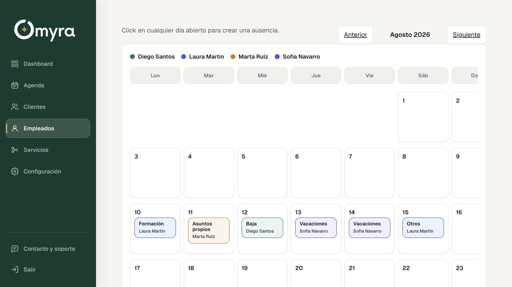
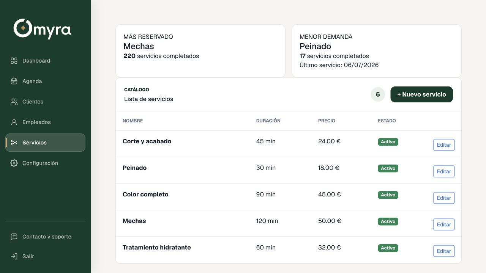

Día organizadoCitas y huecos, de un vistazo
Gestión para salones que quieren avanzar
Tu salón funciona. Incluso cuando tú estás atendiendo.
Omyra reúne agenda, clientes, equipo y servicios para que dejes de gestionar el negocio entre llamadas, mensajes y notas sueltas.
- Sin instalaciones
- Fácil de aprender
- Soporte cercano

Todo lo que ocurre en tu salón, conectado en un mismo lugar.
AgendaClientesEquipoServiciosReservas
El día a día, sin caos
Tu atención debería estar en el cliente, no en cuadrar la agenda.
Cuando las citas viven en una libreta, las ausencias en un chat y los clientes en la memoria, cualquier cambio interrumpe tu trabajo. Omyra pone orden sin hacerte trabajar para el software.
Menos interrupciones
La información que necesitas está disponible sin buscar entre mensajes, papeles o varias herramientas.
Más control real
Comprueba la ocupación, los huecos del día y la carga de cada profesional con claridad.
Una atención más fluida
Consulta el historial de cada cliente y ofrece un servicio más personal desde el primer minuto.
Omyra por dentro
Diseñado para entenderlo en minutos y usarlo todos los días.
Sin pantallas innecesarias. Sin información escondida. Cada módulo responde a una tarea real de tu negocio.
Agenda visual
El día completo, en una sola mirada.
Consulta las citas de todo el equipo, detecta huecos y entiende qué está pasando sin abrir mil pantallas.
- Vista diaria y semanal
- Servicios y duración visibles
- Bloqueos y ausencias integrados
Clientes
Conoce a quien vuelve.
Centraliza datos, visitas e información útil para ofrecer una atención más personal.

Equipo y ausencias
Organiza sin improvisar.
Vacaciones, formación, bajas y asuntos propios quedan visibles donde realmente importan.

Servicios
Tu catálogo siempre claro.
Precios, duración y demanda de cada servicio para tomar decisiones con información real.

La tecnología debe quitarte trabajo, no darte otra tarea que gestionar.
La idea detrás de OmyraO
Omyraen línea
Escribe un mensaje➤
La conversación termina en una cita organizada.
WhatsApp conectado
Donde tus clientes ya están. Pero con tu agenda detrás.
Convierte una conversación en una reserva sin perder el hilo, sin duplicar información y sin apuntarla para después.
El cliente preguntaDesde el canal que ya utiliza cada día.
Omyra consulta disponibilidadTen en cuenta horarios, servicios y equipo.
La cita queda registradaSin copiar, pegar ni volver a comprobar.
Empezar es sencillo
De tu forma de trabajar a Omyra, paso a paso.
Nos cuentas cómo trabajas
Conocemos tu negocio, el equipo, los horarios y los servicios que ofreces.
Preparamos tu espacio
Configuramos Omyra para que empieces con una base clara y adaptada a tu operativa.
Te acompañamos al empezar
Resolvemos dudas contigo hasta que el uso diario resulte natural para todo el equipo.
Una demo, a tu ritmo
Enséñanos cómo funciona tu salón. Te enseñamos cómo Omyra puede simplificarlo.
Sin compromiso y sin una presentación genérica: una conversación centrada en lo que hoy te quita tiempo.
Preguntas frecuentes
Lo esencial, antes de verlo en acción.
Si tu duda no está aquí, escríbenos a hola@omyra.es.
¿Tengo que instalar algo?
No. Omyra funciona desde el navegador, por lo que puedes acceder desde tus dispositivos habituales.
¿Sirve para varios profesionales?
Sí. La agenda muestra la actividad del equipo y permite organizar citas, horarios y ausencias de cada profesional.
¿Puedo ver el producto antes de decidir?
Claro. Puedes entrar en la demo pública o solicitar una demostración personalizada para verlo aplicado a tu forma de trabajar.
¿Me ayudáis a empezar?
Sí. La puesta en marcha incluye acompañamiento para configurar el negocio y resolver las primeras dudas del equipo.